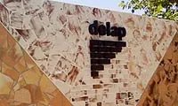
AKCIOVÁ CENA 17,80 €/m2 s DPH
Cena platí pri platbe v hotovosti. V baleni sú 4m2
Obklady sú vyrobené z drvených, prírodných kameňov spojené špeciálnym lepidlom.
Vyrába sa v 7 verziách, tvarov:
- tehla
- stará tehla
- skala
- štiepaný kameň
- mini štiepaný kameň
- pasiky
- decor
Sú určené, ako dekoračný prvok na sokle, fasády, stĺpy a pod. Je možné použiť aj do interiéru, ako ozdobný prvok na steny, stĺpy, krby, lemovanie okolo okien atď. Obklady majú niekolko zaujímavých vlastností asi najdôležitejšia je ich váha. 1 m2 váži cca. 3- 3,5 kg a preto je možné lepiť v exteriéri bez výškového obmedzenia. AJ NA ZATEPLENÉ FASÁDY! Klasické štiepané kameňe nie je možné nalepiť na polystyrén, ani na minerálne vlákno, pretože sú tažké. Obklady delap sú preto ideálnym riešením pre takéto účely. Druhým dôležitým faktorom je paropriepustnosť, čo umožnuje lepiť obklady delap aj na staršie objekty. Tretím faktorom je variabilnosť farieb, ktorá je takmer nekonečná. Momentálne sa vyrába 6 štandardných druhov, ale na požiadavky zákazníkov je možné zmeniť farebnú kombináciu. Obklady ponúkajú veľmi široké možnosti použitia, sú paropriepustné, flexibilné, po dokonalom uschnutí aj umývateľné. Rýchla a lahká manipulácia umožnuje lepiť obklady aj neodborníkom. Ideálne je však, keď realizátor má základné odborné vedomosti. Lepiť sa dá s klasickými lepidlami na obklady a dlažby, v exteriéri treba použiť mrazuvzdorné lepidlá.
Návod na použitie
1. Povrch musí byť rovný a hladký, suchý a stabilný, vonku mrazuvzdorný, čistý a odmastený.
2. Pri obkladaní min. teplota má byť + 5oC. čerstvý obklad chráňme proti dažďu. Pri ohýbaní na rohoch odporúčame zadnú časť obkladu nahriať napr. so zapaľovačom.
3. Lepidlo nanášame s ozubenou stierkou v hrúbke asi 4mm, ale nei na veľkú plochu naraz. Lepísa s klasickými lepidlami na obklady, napr. Baukleber, KVK Superkleber, alebo mrazuvzdorné flexi lepidlá na obklady. Na všetky obklady odporúčame biele lepidlo, kvôli lepšiemu estetickému vzhľadu. Špáry vyplníme samotným lepidlom.
4. Lepiť môžeme zvchu, alebo zospodu.
5. Pri nalepení obkladov treba dať pozor na vodorovné a zvyslé umiestnenie. Hrúbka obkladov je rozdielna v rámci 2-4 mm, s čím dosiahnete prírodný efekt.
6. Obklad stlačme do lepidla tak, aby lepidlo vyšlo na okrajoch. Dbajme na to, aby pod celou plochou obkladu bol spojovací materiál (lepidlo), lebo len tak nám obklad vytvrdne.
7. Stlačenie obkladu do lepidla vykonávame s gumenným valčekom - jemným prevalcovaním.
8. Špárovanie začneme, kým lepidlo medzi obkladmi je mäkké (asi po ukončení 0,5-1m2). Na špárovanie používame silný štetec s krátkou srsťou (zubná kefka). Špárovací materiál musí siahať až po vrchnú fóliu. Špárovanie bude lepšie vyzerať ak prejdeme špáry ešte raz mokrým štetcom.
9. Po uschnutí lepidla (24 hod.) odstránime ochrannú fóliu.
Nanášanie lepidla Nanášanie obkladov
Špárovanie Odstraňovanie fólie
Vzorová tabuľka obkladov - VZOR SKALA
Skala 300ZS Skala Alpy Skala Alpy E1
Skala Antik Skala Badačoň Skala Cyprus
Skala Cyprus Koral 900 Skala Koral E2 Skala Koral E3
Skala Koral E3+900 Skala Levi 1 Skala Rodos
Skala S800 E2
Vzorová tabuľka obkladov - VZOR TEHLA
Tehla 900 Korall Tehla 900V Tehla 900VF
Tehla Alpy Tehla Alpy E1 Tehla Antika
Tehla Badačoň Tehla Koral 2 Tehla Koral E3
Tehla Kreta Tehla S800 E1 Tehla Levi Nepravidelny
Obklady na objednávku
dodávame vo všetkých farebných odtieňoch
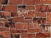
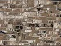
Štiepaný Kameň Mini Štiepaný Kameň
Realizácie
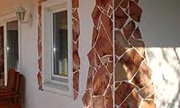
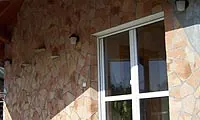
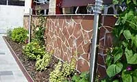
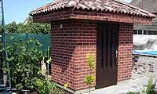
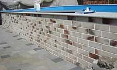
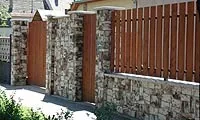
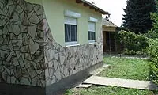
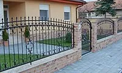
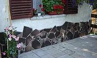
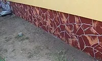
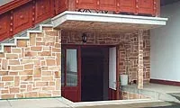
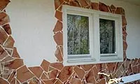
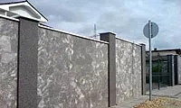
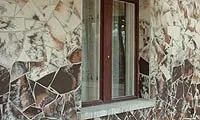
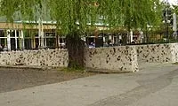
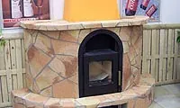
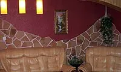